第6回｜学祭に向けて準備＆製作活動 みなとみらい祭当日
学祭に向けての準備
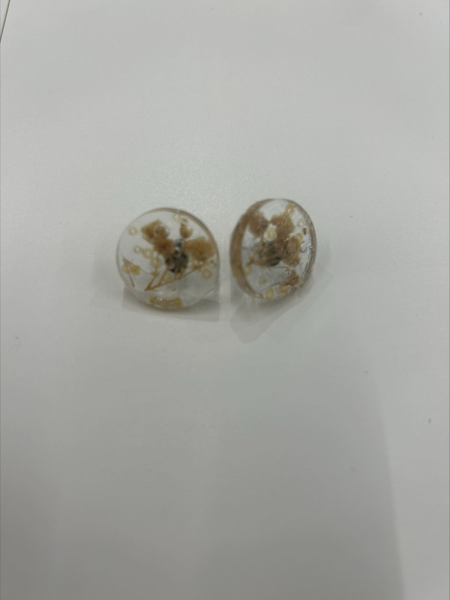 

販売するもの：アクセサリー
価格：200円から500円をめやすで
販売時間：10時半～17時半まで
販売をする人数：約3人
必要なもの：レジン、UVライト、キラキラする小物、レンジ用の型
使った素材→アクリル
イメージ：できるだけシンプルに大人っぽいデザイン
目標として✨
これから進めていく計画である、アクリカルというブランドの市場分析をおこない、どの年代に人気があるのか、またデザイン性や価格のレベルを調査する。
これらを含めて、ものづくりの視点や周りが行うブースを含めて、アクリルだけでなく幅広くみながら、これから進めていくブランドの方向性をきめること。
みなとみらい祭
ブース紹介
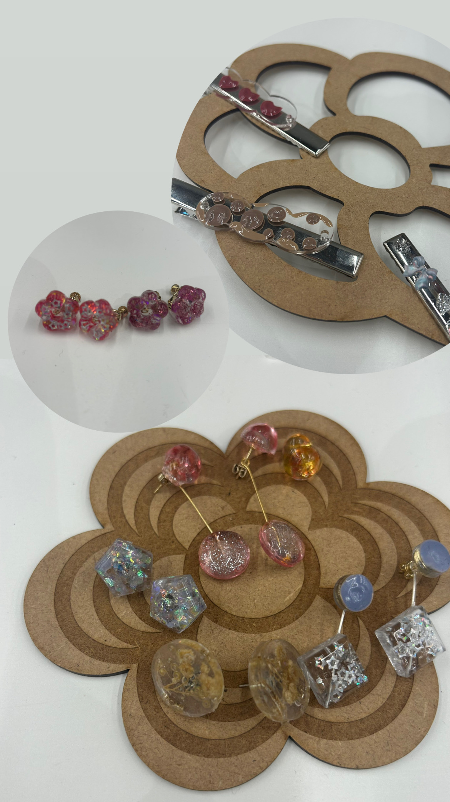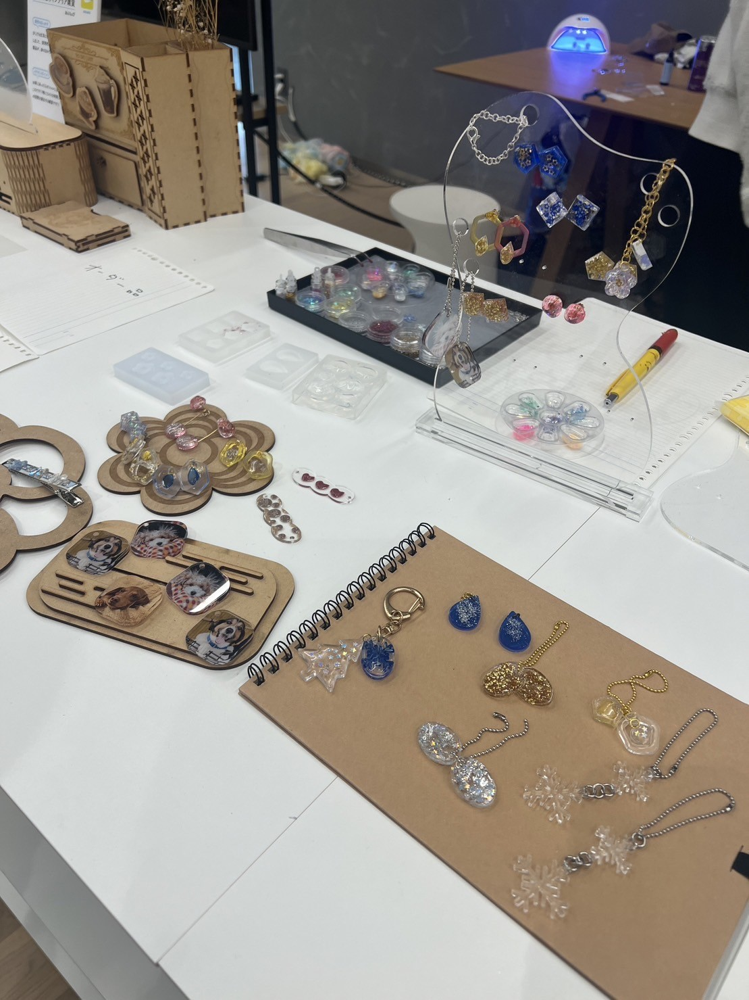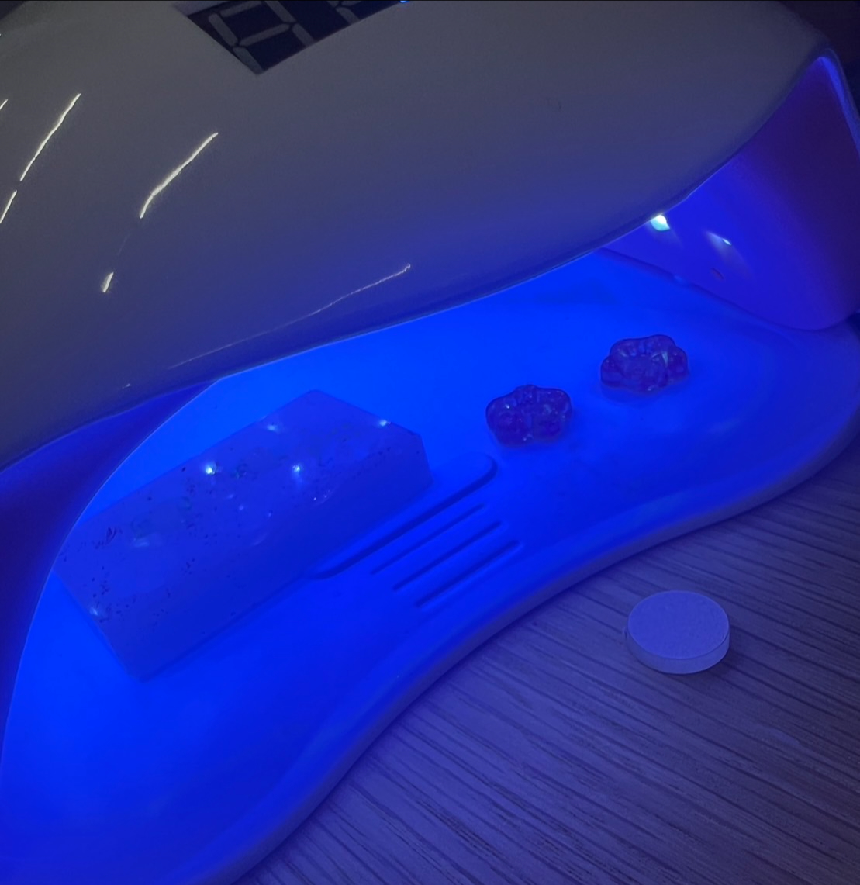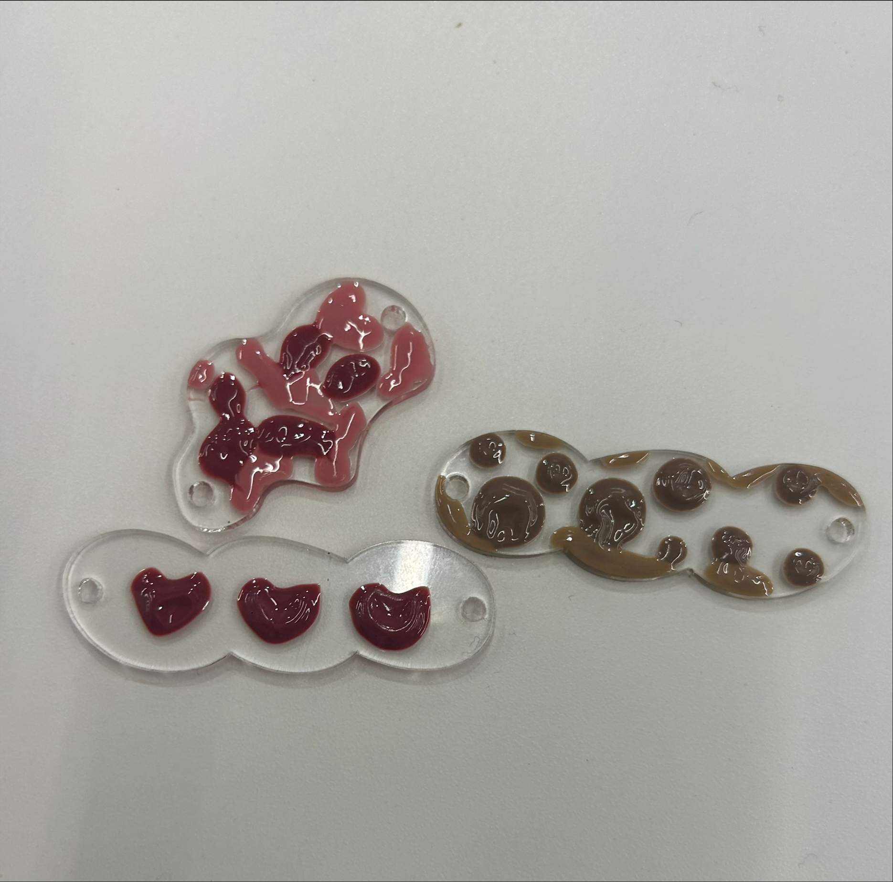
オーダーメイド作品
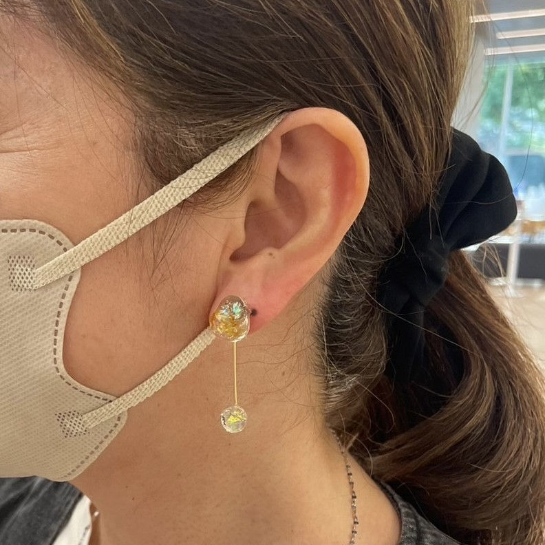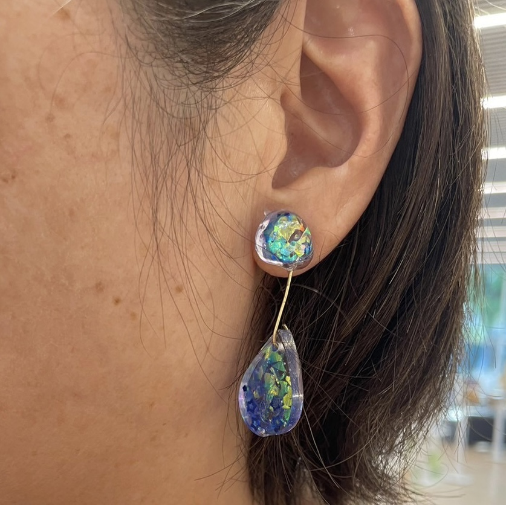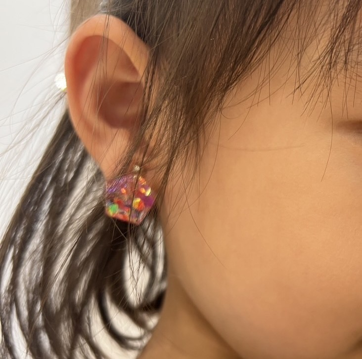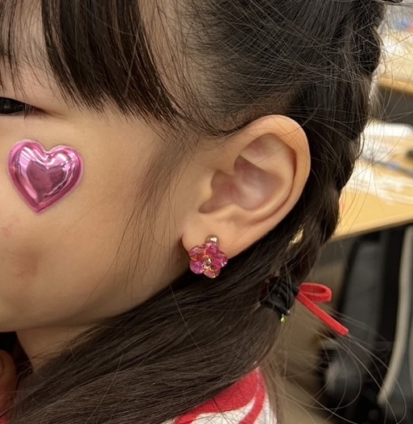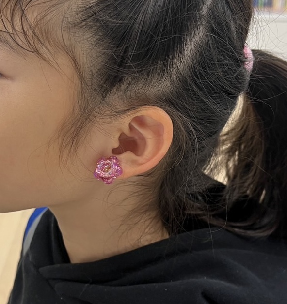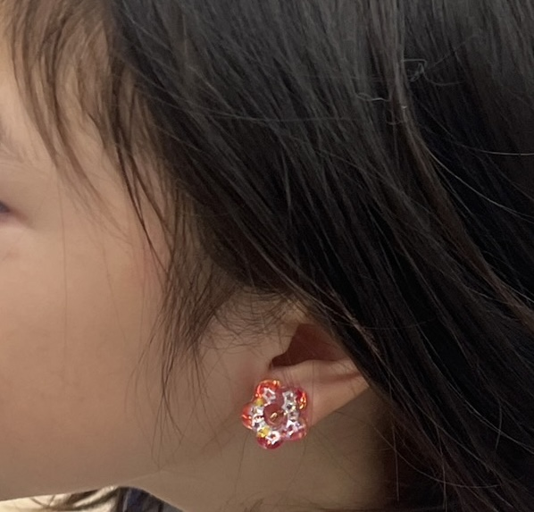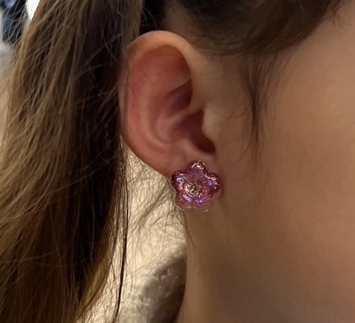
子ども連れの親子で楽しんでもらうことができました。😆
親から子に「イヤリング作れるって！！やる？」と子どもに聞いていることが多く、子どもが喜ぶ姿から楽しい体験を提供することができたと感じました。
ファボラボKURIYAMAの岡さんにも教えていただきましたが、値段なりの体験の価値があるかどうかが重要であるように商品が値段に対する価値が提供できるのかが大切ですが、今回は十分に意識できたと思います‼
お子さんが、「作っているところが見たい」ということで、中で見学できるようにしていましたが、母親の方が普段からアクセサリーをつくっているとのことで、凄くプレッシャーを感じました。
人によって作り方も違うし、部品の値段によっては細かいところを省きながら簡単な工程で、時短での作業にもなります。
お店などで販売している商品を一度値段ごとに違う商品を比べて見るのも参考になるのではないかと勉強になりました。例：100均、3COINS、500円代商品など、、、
2日目は現地での作業ができませんでしたが、1日目来られなかった人も含めデザインの幅を展開し、冬仕様のデザインをプラスしていくことでより、お客さんを引き寄せることができたと聞きました。
1日目の反省であった、ハンドメイドにすることでオーダーが一度に多く入っていたことや、材料費を合わせて検討したり、オーダ－メイド商品の価格を400円から500円、お客様の安いとの声から200円の商品には300円に変更した結果、十分な利益を達成することができました。